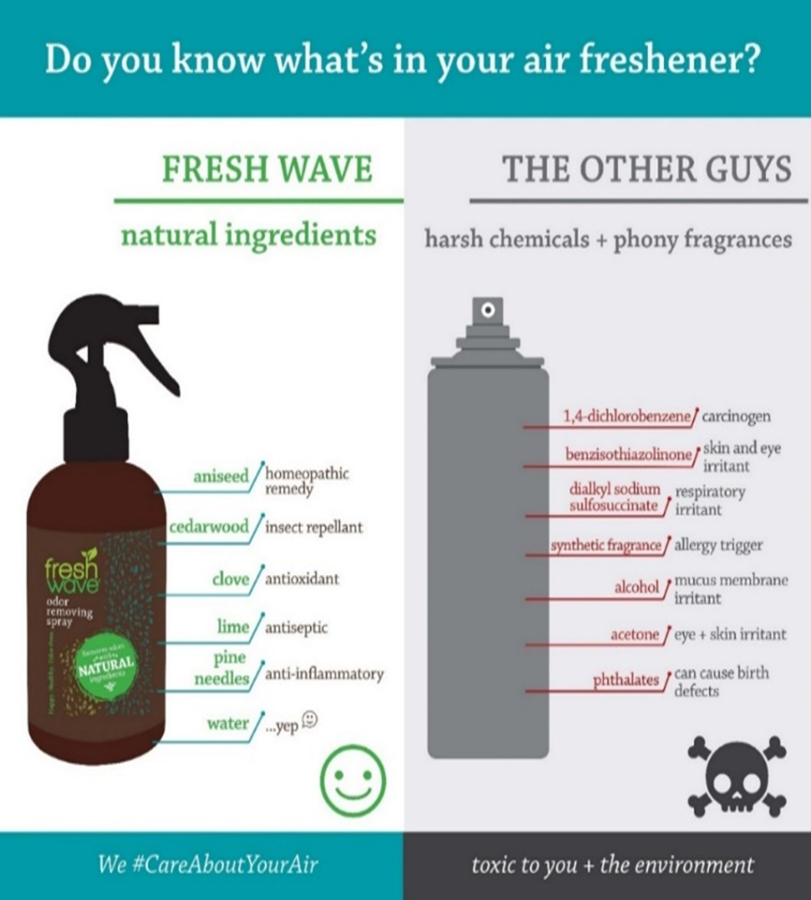
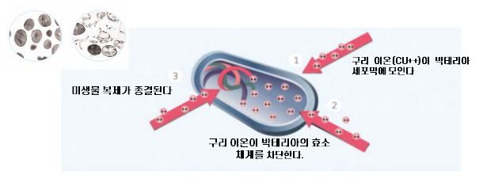
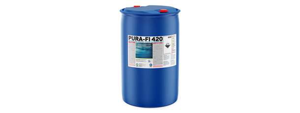
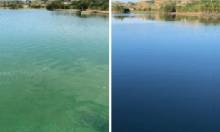
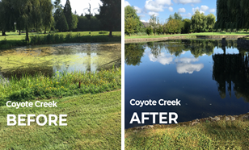
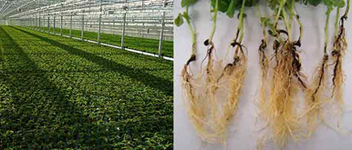
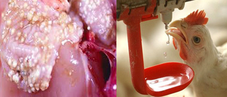
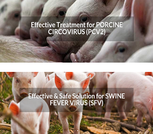
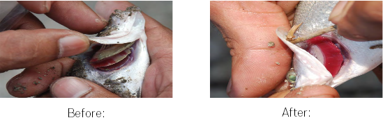
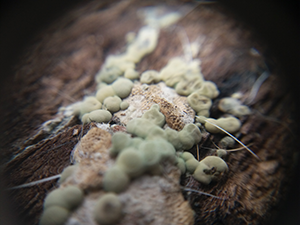

100% 천연 성분으로 만든 안전하고 효과적인 악취 제거 솔루션을 소개합니다
미국 OMI사의 Freshwave IAQ 라인업 — Ecosorb, Smoke-Away, Spray, Gel
등을 독점 공급합니다.
산업 현장, 상업 공간, 가정에서 발생하는 모든 냄새를 100% 천연 성분으로
안전하게 제거합니다.
천연탈취제는 사람과 동물 그리고 환경에 어떤 유해 성분도 없어야 합니다. 화학 성분으로 만든 방향제는 냄새나 악취를 없애는 것이 아니라 냄새보다 강한 화학적 향으로 냄새를 가리는 것입니다.
천연 탈취제는 탈취 분자가 냄새 분자를 중화시켜 냄새나 악취를 근본적으로 제거합니다. 우리가 자주 사용하고 있는 방향제는 이름도 알 수 없는 많은 유해 성분들이 들어 있습니다.

방향제 성분들의 위험성:
나와 가족 그리고 우리의 건강을 위해 천연 탈취제를 선택하세요.
100% 식물성 오일로 만들었으며 사람, 동물 그리고 환경에 안전합니다. 인체·어류 독성 실험, VOCs 검증을 통해 100% 천연제품으로 인정받았습니다.
인체 독성 실험,
어류 독성 실험,
휘발성 유기화합물(VOCs) 실험을 통해
100% 천연제품으로 인정받은
최고의 천연 탈취제 제품들을 소개하겠습니다.
| 검증 항목 | 기준 |
|---|---|
| 인체 독성 (Human Toxicity) | EPA Method 1~6 합격 |
| 어류 독성 (Fish Toxicity) | EPA 기준 전 항목 합격 |
| VOC 분석 | EPA Method 24·8260 기준 |
| 가스 테스트 | 악취 제거 성능 평가 합격 |
소변기·좌변기 전용 탈취 제품으로 화장실 냄새 문제를 근본적으로
해결합니다.
KCL 유해성 검사 전 항목 불검출, 30일간 효과 지속.
=>소변기·좌변기 전용 탈취 제품으로 화장실 냄새 문제를 근본적으로
해결합니다.
양면 디자인 특허기술로 소변 튐 방지, 고농축 향 기술로
향이 오랫동안 지속되며, 단순히 냄새를 가리는 것이 아니라 유익한
박테리아가 냄 새 원인을 분해합니다.
KCL 유해성 검사 전 항목
불검출, 30일간 효과 지속.
Pura-Fi 420 은 사우디아라비아 국영 석유회사 아람코의 자회사 인바이로 세이프 솔루션 (Enviro Safe Solutions)의 제품으로 캐나다에 본사가 있습니다. 현재 모든 제품은 말레이지아 공장에서 수입을 하고 있습니다.








